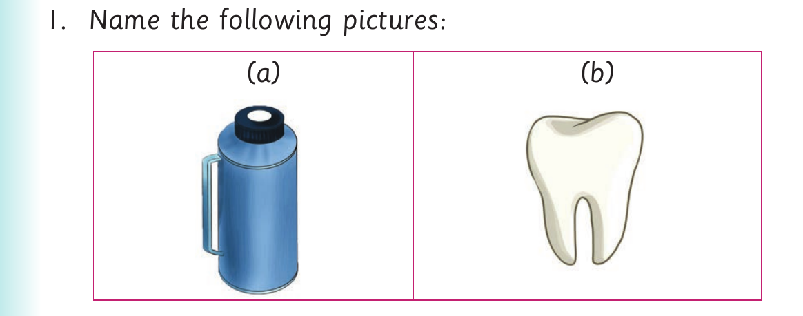

I read words with letter sound th
I read words with letter sound th.
Activity 1

The first two th picture answers are a thermos and a tooth.
1. Name the following pictures: (a) (b)
Enter the response for item (a). Use a keyboard or Braille to enter the response.
Answer for item (a)
Enter the response for item (b). Use a keyboard or Braille to enter the response.
Answer for item (b)
56